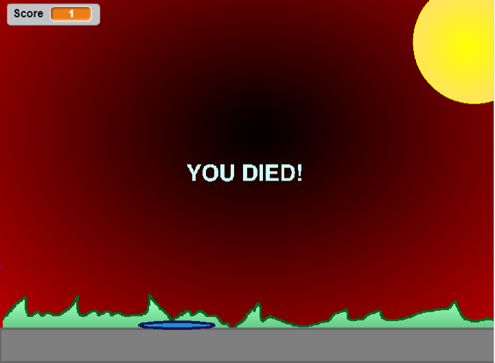

Well, I was born in the far off year of 2000, specifically on December 4th. I am the youngest of two children, with my elder sister being six years older than me. Currently, I work as a lifeguard at my friendly neighborhood YMCA, where all the children decided to play 'Let's Splash the Lifeguard'. Other than my occasionally mind-numbing job, I spend most of my time either sleeping, playing on my computer, wishing that I could sleep,l eating or nerding out about various subjects, including, but not limited to comic books, movies, music, art, video games and SPACE.
I like a lot of things, but I dislike... more things. I'm a very salty person, in case you can't tell. In fact, I've been told on multiple occasions that my friends would throw me across the dinner table if they needed any salt. Ah, well. Let's see... I like sleeping, being sarcastic, when my code actually works, tasty food, good tea, reading and occasionally shipping. Oh yeah, I went there. What I don't like is far too much to actually list, so I'm going to keep it to things that might actually be relevant, such as that I utterly loathe oranges. And bananas. And when my code doesn't work. And an entire alphabetically organized list that I won't type in. Oh, but I like Fred. Fred is cool. (He's my car)
Fun facts, fun facts... Well, other than that one time I accidentally willingly ate dirt, my life is really not that exciting. That I remember. However, since I almost obsessively research subjects when I get interested in them, I could completely destroy you in a contest of knowledge regarding space, most Marvel comic books, Pokemon, Fire Emblem, and possibly even Touhou music. Various examples include that I have surveyed almost everyone that I know, thereby learning that no one actually remembers who the first American Astronaut is, (*hint hint* It's Alan Shepard.), how to perform the MissingNo. glitch on any first generation Pokemon game, invading the code of the GBA era Fire Emblem games to manipulate them for my purposes, and many other random facts and abilities.
SO, Triangle Attack. Triangle Attack was the first game that I built on Scratch itself, since I previously used the off-brand-ish version known as SNAP!. Which, quite frankly, was quite a bit less intuitive. Triangle Attack was also the first platformer I ever made actually work, since the platforms themselves are always a problem child when it comes to my thinking process. I did in act have help, a girl named Kimi collaborated with me on this project. Although Triangle Attack works, the jumping scheme and randomly appearing triangles make this game pretty hard... NINTENDO HARD.
Here are some links that could give you some insight into some of the more fun things in life... like forgetting to eat for eight hours while you binge TVTropes... ¯\_(ツ)_/¯
To the Mystical Land of Tropes and FictionWhat are you looking for down here? There's nothing but me and this scorpion...